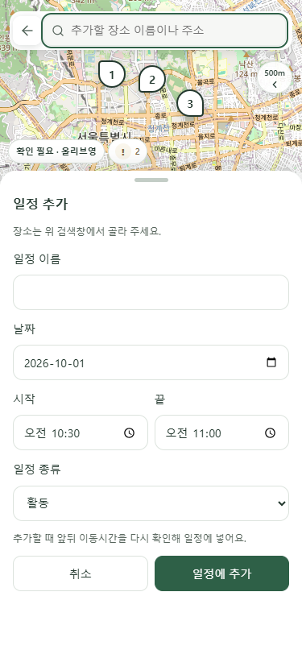
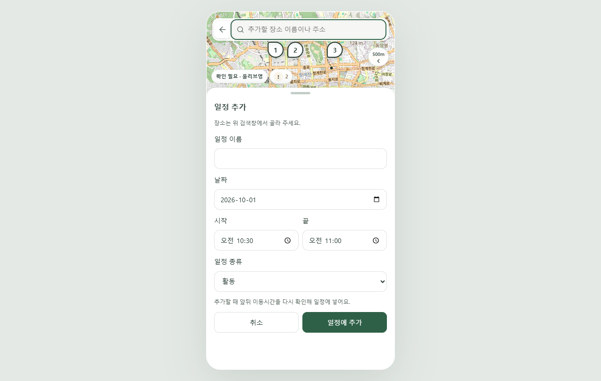
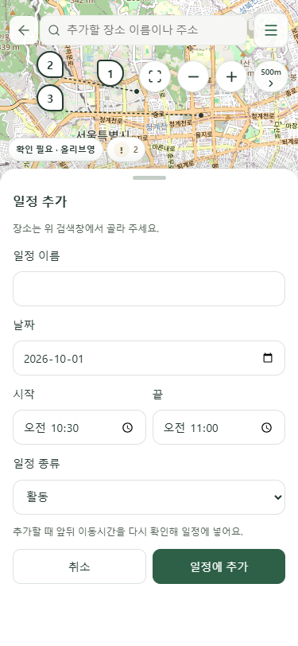
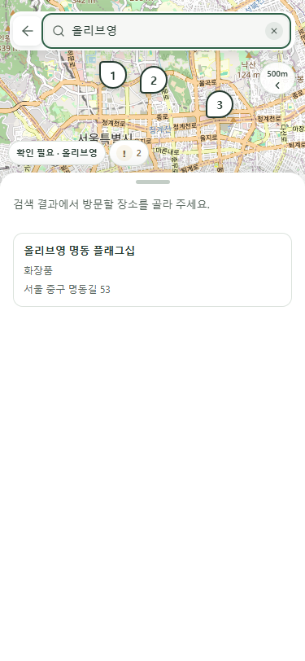
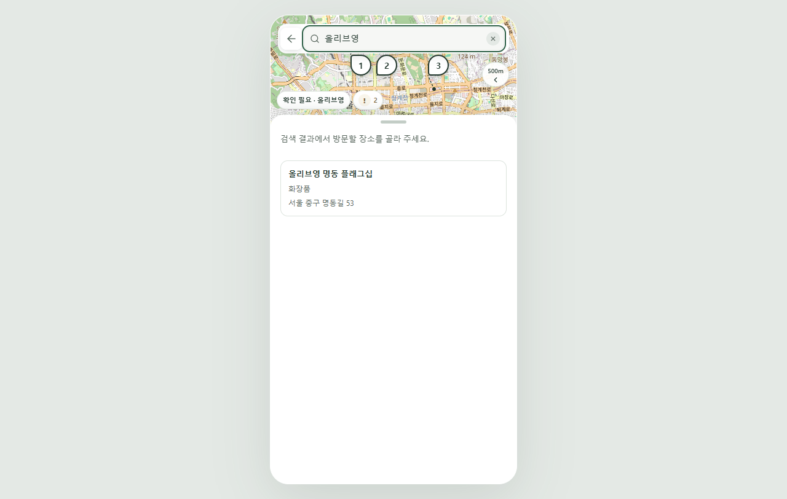
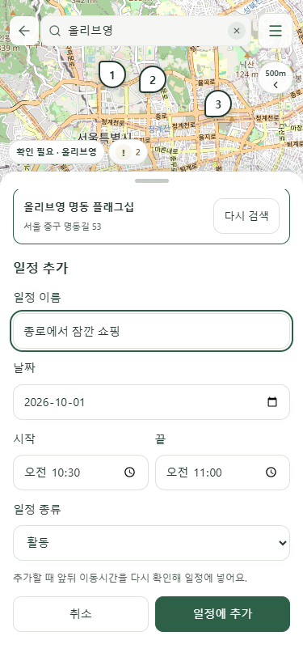
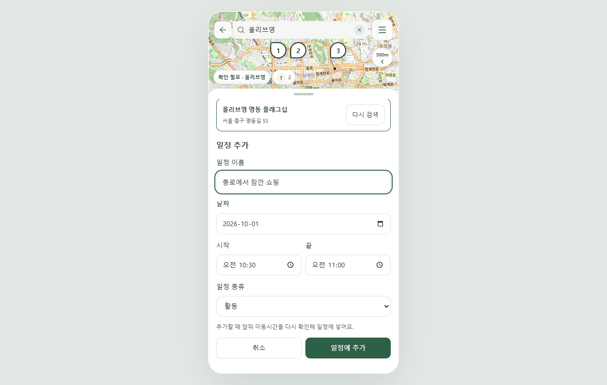

입력 폼을 유지하면서 상단 검색창에 초점을 줍니다. 실제 Chrome 촬영 화면입니다.
빈 검색어에서는 입력 폼을 유지합니다. 접힌 지도 화살표는 같은 자리에서 <로 표시됩니다.


화살표는 옆으로 이동하지 않고 같은 자리에서 >로 바뀝니다.

입력한 일정 초안을 유지하며 장소를 검색합니다.


장소 선택 후 일정 이름에 초점을 돌리고 작성 중인 값을 유지합니다.

